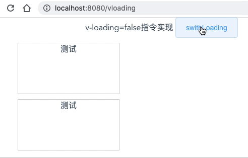

v-loading指令的实现，怎么通过一个指令自动加骨架屏
这篇文章发布于 2020/09/07，归类于 Vue
标签：
v-loading的实现，怎么通过一个指令自动加载骨架屏，element v-loading在IE下可能会溢出到全屏的问题，element v-loading在IE下可能会关不掉的问题
这里需要用到vue自定义指令，我们先写个v-zloading来实现loading，在loading过程中加骨架屏
<div v-zloading="loading" class="div">
测试
</div>
由于是全局自定义指令，所以在main.js里写
// 挂载dom
function mountDom(el) {
el.style.position = "relative";
let div = document.createElement("div");
div.style.position = "absolute";
div.style.top = "0";
div.style.left = "0";
div.style.right = "0";
div.style.bottom = "0";
div.style.backgroundColor = "white";
div.classList.add("zloading");
let htmlStr = `
<div style="positon:absolute;top:0;left:0;z-index:999;width: 100%;margin: 10 auto;">
<div class="fast-loading"></div>
<div class="fast-loading w40"></div>
<div class="fast-loading w80"></div>
</div>
`;
div.innerHTML = htmlStr;
el.appendChild(div);
}
Vue.directive("zloading", {
bind: (el, binding) => {
// console.log("v-zloading bind");
// console.log(binding, vnode);
if (binding.value) {
mountDom(el);
}
},
update: (el, binding) => {
// console.log("v-zloading update");
// console.log(el, binding, vnode);
let zloadingDom = el.querySelector(".zloading");
// console.log("zloading dom", zloadingDom);
if (zloadingDom) {
zloadingDom.style.display = binding.value ? "block" : "none";
} else {
binding.value && mountDom(el);
}
}
});骨架屏的样式common.css，然后在App.vue里引入
.fast-loading {
height: 20px;
margin: 10px 0;
width: 200px;
background-color: rgb(245, 245, 245);
background-image: repeating-linear-gradient(90deg, #eee, #f5f5f5 100%);
animation-name: fastLoading;
animation-timing-function: linear;
animation-duration: 1s;
animation-iteration-count: infinite;
}
@keyframes fastLoading {
from {
background-position: 0 0;
}
to {
background-position: 100px 0;
}
}
.w100 { width: 100% }
.w80 { width: 80% }
.w60 { width: 60% }
.w40 { width: 50% }
.w30 { width: 30% }这样就模拟实现了一个v-loading, 完整demo参见v-zloading 实现 | github 注意，指令的实现是放在main.js里面的
v-loading源码
我们自己简单实现v-loaidng的功能后，再来看看v-loading的源码
// 截取至element v-loading部分源码
// https://github.com/ElemeFE/element/blob/dev/packages/loading/src/directive.js
Vue.directive('loading', {
bind: function(el, binding, vnode) {
//....
const mask = new Mask({
el: document.createElement('div'),
data: {
text: vm && vm[textExr] || textExr,
spinner: vm && vm[spinnerExr] || spinnerExr,
background: vm && vm[backgroundExr] || backgroundExr,
customClass: vm && vm[customClassExr] || customClassExr,
fullscreen: !!binding.modifiers.fullscreen
}
});
el.instance = mask;
el.mask = mask.$el;
el.maskStyle = {};
// 如果v-loading设置的值为true，挂载maskdom(toggleLoading方法)
binding.value && toggleLoading(el, binding);
},
update: function(el, binding) {
el.instance.setText(el.getAttribute('element-loading-text'));
if (binding.oldValue !== binding.value) {
toggleLoading(el, binding);
}
},
unbind: function(el, binding) {
if (el.domInserted) {
el.mask &&
el.mask.parentNode &&
el.mask.parentNode.removeChild(el.mask);
toggleLoading(el, { value: false, modifiers: binding.modifiers });
}
el.instance && el.instance.$destroy();
}
});回过头来看看之前element UI在IE下可能会出现的两个bug
element v-loading在IE下可能会溢出到全屏的问题
我的理解是，我觉得主要的核心在于在v-loading作用的元素上添加position:relative没有成功
// ...
if (el.originalPosition !== 'absolute' && el.originalPosition !== 'fixed') {
addClass(parent, 'el-loading-parent--relative');
}
// ...element v-loading在IE下可能会关不掉的问题
我的理解是，当binding.value有值时，它是在Vue.nextTick下次渲染周期才挂载loading的dom，如果设置true,false间隔非常快，还没在下个渲染周期，那么其实loading已经是false了，但它才开始挂载，导致关闭不了
// ...
if (binding.value) {
Vue.nextTick(() => {
if (binding.modifiers.fullscreen) {
el.originalPosition = getStyle(document.body, 'position');
el.originalOverflow = getStyle(document.body, 'overflow');
el.maskStyle.zIndex = PopupManager.nextZIndex();
addClass(el.mask, 'is-fullscreen');
insertDom(document.body, el, binding);
} else {
removeClass(el.mask, 'is-fullscreen');
// ...后面有机会在 node_modules 下修改源码加上console，然后在IE下调试看看，这个是目前来说最好的方法。
参考：